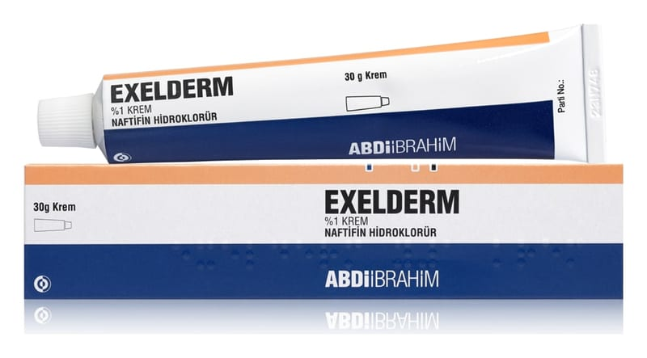

Exelderm %1 Krem, 30 Gram

Ne için kullanılır
KT · Bölüm 1EXELDERM naftifin isimli etkin maddeyi içerir ve mantar enfeksiyonlarının harici tedavisinde kullanılır. EXELDERM deri mantarları, maya mantarları, küf mantarları ve diğer mantarlara karşı etkinlik gösterir. EXELDERM aynı zamanda mantar enfeksiyonlarında sıklıkla oluşan farklı birçok bakteriye karşı da etkilidir. EXELDERM’in iltihap giderici etkisi iltihap belirtilerini ve özellikle kaşıntıyı hızla azaltır.
EXELDERM 30 g’lık tüplerde bulunan bir kremdir.
EXELDERM deride oluşan aşağıdaki mantar enfeksiyonlarının lokal tedavisinde kullanılır:
• Deri veya deri kıvrımlarının mantar enfeksiyonları (kızarıklık, pullanma ve şişkinlik ya da kaşıntılı kabarcıklar olarak görülür) • Parmak arası mantarları • Tırnaklarda görülen mantar enfeksiyonları • Derinin kandida enfeksiyonları (Candida türlerinin sebep olduğu mantar enfeksiyonu) • Pityriasis versicolor (deri yüzeyindeki bir mantarın aşırı üremesi ile oluşan sık rastlanılan bir deri hastalığı)
• İltihaplı deri mantarlarının (kaşıntılı veya kaşıntısız) tedavisi için kullanılır. 2.EXELDERM’i kullanmadan önce dikkat edilmesi gerekenler
EXELDERM’i aşağıdaki durumlarda KULLANMAYINIZ
Eğer; naftifin, benzil alkol veya ilacın içeriğindeki diğer maddelere karşı a şırı duyarlılığınız varsa.
EXELDERM’i aşağıdaki durumlarda DİKKATLİ KULLANINIZ
Yalnızca haricen kullanım içindir, göze temas ettirmeyiniz. Eğer hastalığınızın belirtileri iyileşmezse ve ilacınız beklenen etkiyi göstermezse doktorunuza söyleyiniz.
Bu uyarılar, geçmişteki herhangi bir dönemde dahi olsa sizin için geçerliyse lütfen doktorunuza danışınız.
EXELDERM’in yiyecek ve içecek ile kullanılması
Deri üzerine sürülerek uygulandığından, yiyecek ve içeceklerle etkileşmesi beklenmemektedir.
Hamilelik İlacı kullanmadan önce doktorunuza veya eczacınıza danışınız.
Hamileyseniz, doktorunuz önermedikçe EXELDERM kullanmayınız.
Tedavi sırasında hamile olduğunuzu fark ederseniz hemen doktorunuza veya eczacınıza danışınız.
Emzirme İlacı kullanmadan önce doktorunuza veya eczacınıza danışınız. Doktorunuz tarafından önerilmediği müddetçe emzirme döneminde EXELDERM kullanmayınız.
Araç ve makine kullanımı Araç ve makine kullanım yeteneği üzerine etkisi gözlenmemiştir.
EXELDERM’in içeriğinde bulunan bazı yardımcı maddeler hakkında önemli bilgiler
İçeriğinde bulunan stearil alkol ve setil alkol nedeniyle bölgesel deri reaksiyonlarına (kontak dermatit gibi) neden olabilir.
Diğer ilaçlar ile birlikte kullanımı EXELDERM’in diğer ilaçlar ile etkileştiğ ine dair bilgi bulunmamaktadır.
Eğer reçeteli ya da reçetesiz herhangi bir ilacı şu anda kullanıyorsanız veya son zamanlarda kullandınız ise lütfen doktorunuza veya eczacınıza bunlar hakkında bilgi veriniz.